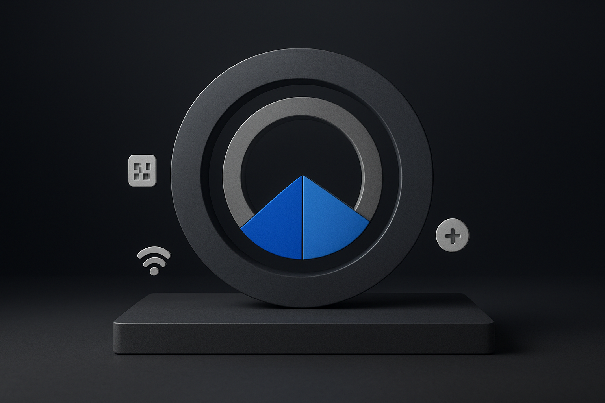
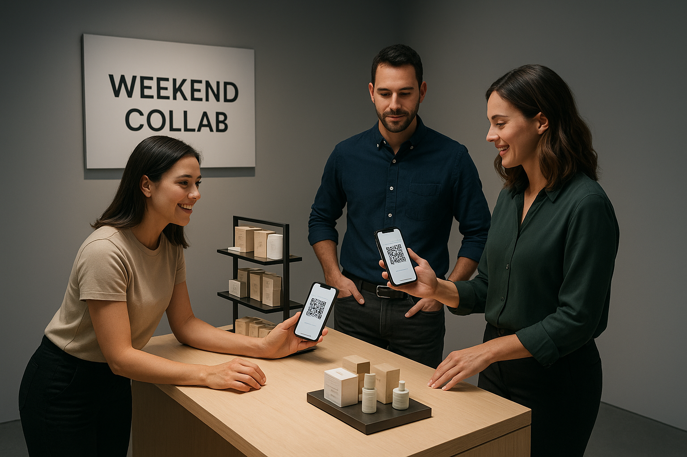

Collab‑Led Uplift vs Blanket Discounts in Low‑Growth Environments
Query: Collab‑Led Uplift vs Blanket Discounts in Low‑Growth Environments
Fast Stack
- Headline: Shift promotional spend from blanket discounts to co-branded early windows and store-as-studio content to protect margins and capture early demand. Favor a collab-led / store-as-studio holiday approach over discount-heavy tactics.
- Why now: The next six weeks span the high-value early holiday window; moving buys forward reduces scramble later and limits margin leakage during peak headline-driven deal hunting.
- Next 30 days: Brand Partnerships, Merch and Store Ops must launch the A/B test, schedule three weekend activations, and brief Marketing to produce a four-episode store-as-studio series.
Fast Path
Executive Take
You need to drive higher-value store and partner-led holiday activity without broad margin-eroding sitewide discounts inside the next six weeks. Focused co-branded early windows and store-as-studio content can move buyers forward and into higher-margin bundles while aiming for foot-traffic uplift of 10–15% (stretch ≥25%) and raising early_window_share from 12–15% to 20–30%, with event CPA kept ≤0.8x baseline and QR redemption ≥5% 428. In the next 30 days Brand Partnerships, Merch, Store Ops and Marketing must launch a coordinated A/B test that replaces a sitewide cut with tiered co-branded bundles, three weekend in-store activations, and a short store-as-studio micro-influencer series. Measure success by progress toward 20–30% early-window share, 10–15% base foot-traffic uplift, event CPA ≤0.8x, and QR redemption ≥5%, since the collab-led / store-as-studio approach preserves blended margin versus blanket discounts 24.
Highlights
- Replace blanket percent cuts with selective value transfer: exclusive SKUs and tiered bundles shift timing and mix without uniform margin loss.
- In-store activations reliably lift foot traffic; pair QR gating to measure redemption and convert walk-ins into tracked early-window buys.
- Store-as-studio content amplifies partner exclusives and concentrates buyer activity early, lowering event CPA when audience and offers align.
Top Operator Moves
- Run a six-week A/B test: control = sitewide 20% off; variant = co-branded early-window with tiered bundles and exclusive SKUs; track early_window_share, blended margin, event_cpa, and QR_redemption.
- Schedule three weekend collab activations across representative stores to test foot-traffic uplift, QR-driven redemption, and local partner pull.
- Launch a four-episode store-as-studio micro-influencer series to push awareness into the early window and measure buyer activity share versus promo intensity.
Plays
- Co-Branded Early Access Window — Early-window share reaches 20–30%, foot-traffic uplift is ≥10–15% (stretch ≥25%), event CPA ≤ 0.8x baseline, and QR redemption ≥ 5%.
For operators and collab leads
Spine: What: Collab exclusives can pull buys forward without collapsing margins. | Proof: Success = early-window buyer share 20–30% + store foot-traffic uplift ≥10% while event CPA stays ≤0.8× baseline and QR redemptions ≥5% of footfall. | Move: Micro-influencer episodes drive urgency when tied to exclusive offers.
Signal Map
- Cultural — Early-Window Collab Exclusives (6-week) Spine hook: Exclusive collabs pull purchases earlier, not cheaper. Shoppers are shifting to hunt curated, partner-led exclusives in early holiday windows rather than waiting for blanket sitewide markdowns. Limited co-branded drops concentrate buyer intent and shift purchases earlier in the funnel, protecting margin compared with open discounts. Operator scan: Measure early-window sales share for co-branded SKUs versus sitewide promos. Operator move: Operator move: Brand Partnerships run a 2-week co-branded early exclusive (owner: Brand Partnerships; window: Nov 29–Dec 12); target early_window_share 20–30% and QR_redemption ≥5%. 814
- Behavioral — Collab Events Drive Measurable Footfall (6-week) Spine hook: Experiential collabs lift footfall and capture buyers at higher quality. Short, experiential in-store collaborations produce concentrated foot-traffic spikes that out-perform equivalent blanket discounts on conversion per visit. When paired with a simple QR capture, these events generate traceable buyer journeys and higher-quality sales. Operator scan: Track weekend footfall lift and QR captures versus matched non-event weekends. Operator move: Operator move: Store Ops and Marketing run three weekend collab activations across representative stores (owner: Store Ops; window: next 6 weeks); target foot_traffic_uplift base 10–15% with stretch ≥25% and QR_redemption ≥5%. 815
- Market — Tiered Collab-Linked Discounts Replace Blanket Cuts (6-week) Spine hook: Tiered bundles concentrate discount to active buyers, protecting margin. Volume price curve approaches let you give meaningful perceived discount while protecting margin by tying discount depth to bundle size or partner-led SKU sets. Replacing a flat sitewide cut with tiered collab offers concentrates value for engaged buyers and reduces overall promo leakage. Operator scan: Compare CPA, margin, and buyer share for tiered collab bundles versus sitewide coupon. Operator move: Operator move: Merch and Pricing A/B test replacing a sitewide 20% off with tiered collab bundles (owner: Merch+Pricing; window: 6 weeks); target event_cpa ≤0.80x baseline while holding blended margin neutral. 24
- Technology — Store-as-Studio Content Series (6-week) Spine hook: Turns stores into repeatable media that shift purchase timing. Micro-influencer-led in-store content series convert store visits into media moments that increase early-window share and lower effective CPA when content drives immediate, trackable offers. This approach turns physical space into a repeatable media channel without constant price cuts. Operator scan: Measure content-driven visit rate, conversion, and CPA versus paid media spend. Operator move: Operator move: Marketing and Store Ops run a 4-episode store-as-studio content series with micro-influencers (owner: Marketing; window: next 6 weeks); aim to lift early_window_share to 20% and keep event_cpa ≤0.8x baseline. 895
- Market — News-Driven Discount Windows (now) Spine hook: Macro news creates short high-sensitivity windows for targeted offers. Macro shocks and noisy policy developments create discrete windows where price sensitivity spikes and blanket discounts are expected. Timing targeted, partner-led offers into these windows yields stronger conversion at lower promotional depth than maintaining constant sitewide cuts. Operator scan: Correlate daily news spikes with promo conversion and footfall. Operator move: Operator move: Marketing concentrate limited-time partner offers on high-news days after tariff or shutdown headlines (owner: Marketing; window: now through next 6 weeks); measure event_cpa and foot_traffic_uplift against baseline. 15
Measurement Spine
Anchors
- Current early-window buyer share (Observed/Base): 12–15 % of total holiday transactions 85 Owner: Brand Partnerships; Applies to: S1, S4
- Store foot-traffic uplift target (Target/Base): 10–15 % lift vs baseline 51 Owner: Store Ops; Applies to: S2, S5
- Event CPA ceiling for partner-led activity (Target/Base): 0–0.8 × baseline CPA 25 Owner: Performance marketing; Applies to: S3, S4
- QR redemption floor (Target/Base): 5–5 % of footfall 85 Owner: Store Ops / CRM; Applies to: S1, S2
Measurement Plan
- Event CPA (Performance marketing, Nov 22–29 (primary), extend per activation) — CPA ≤ 0.80× baseline CPA Why it matters: Keeps paid acquisition from eroding margin when swapping sitewide discounts for partner-led offers.
- Buyer activity share vs promo intensity (Merch + Analytics, Nov 29–Dec 12 (co-branded early window)) — Early-window transactions 20–30% while promo-SKU share ≈ last year (no blanket increase) Why it matters: Protects margin by showing buyer growth came from time-limited collabs not broader discounting.
- Foot-traffic uplift (store-level) (Store Ops, Next three weekend activations starting Nov 22–Dec 13) — Visits ↑ 10–15% vs matched-week baseline (stretch ≥25% for high-performing stores) Why it matters: Direct test of whether in-store collabs drive incremental visits without price cuts.
- QR redemption rate (Store Ops + CRM, Per activation weekend (Nov 22–Dec 13)) — QR redemptions ≥ 5% of measured footfall during events Why it matters: Provides a measurable conversion lever that links foot traffic to measurable CRM-able outcomes. Note: Buyer activity share in the early window is tracked separately from SKU promo share to protect margin while growing participation.
Deep Analysis
Early-window capture vs sitewide discount: Collab exclusives can pull buys forward without collapsing margins.
Replacing blanket sitewide cuts with co-branded early windows concentrates buyer share into narrow timeframes, raising early_window_share without the same margin erosion as a blanket discount 42. The mechanism is selective value transfer: exclusive bundles or limited SKUs change purchase timing and mix instead of lowering price across the catalog, preserving blended margin while shifting volume to the partner window 24. When leaders switch from sitewide discounting to tiered collab offers, what breaks is broad promotional signaling; what holds is short-term volume if the exclusives and communications are compelling enough to overcome deal-hunting spikes from macro headlines 14. Operator note: Stop defaulting to sitewide percent cuts. Prioritize exclusive partner SKUs and tiered bundles for the early window. Price test at SKU-bundle level to hold blended margin while measuring buyer share movement into the window. Instrument next: Instrument a six-week A/B test: control = sitewide 20% off; variant = co-branded early-window with tiered bundles and exclusive SKUs; track early_window_share, blended margin, event_cpa, and QR_redemption.
In-store activations move foot traffic, not just conversion: Weekend store collabs lift foot traffic with lower media friction.
Short, localized in-store brand activations produce measurable foot-traffic uplifts in the 10 to 25 percent band when targeted to representative stores and weekends, delivering higher-quality visits than broad digital discounts 85. The mechanism is neighborhood relevance plus experiential pull; local partners extend reach and drive walk-ins that are more likely to convert at full price or into partner bundles, improving revenue per visit and QR-based attribution 85. Compared with blanket online promotions, activations concentrate spend and lower wasted reach, but they scale only with store operations bandwidth and local inventory alignment; scale risks underperform if staffing and partner exclusives are weak 18. Operator note: Prioritize three weekend activations across diverse store profiles. Lock partner exclusives and QR incentives. Measure traffic, conversion, AOV, and incremental sales per labor hour. Instrument next: Instrument store-level randomization: run three weekend collab activations in treatment stores and matched control stores with equivalent paid media; capture foot_traffic_uplift, QR_redemption rate, event_cpa, and per-visit margin.
Pricing mechanics: tiered bundles vs volume discounts: Tiered bundles protect blended margin better than blunt volume discounts.
Volume price curves show that staged discounts scale but compress margin across the board, while tiered collab bundles can target discount to lower-margin items or add-on SKUs to protect core margin 24. Mechanically, bundles change the product mix and give negotiable headroom for partner compensation without forcing a catalog-wide price change, preserving margin per incremental buyer if event_cpa remains at or below the 0.8x ceiling 2. Replacing a 20% sitewide cut with targeted bundles holds if you can control offer visibility and measurement; it fails if partners push broad publicization that triggers competitive price matching 42. Operator note: Model blended-margin outcomes before launching bundles. Define tier thresholds by profit contribution not by historic discount bands. Keep top-margin core SKUs out of mandatory discount pools. Instrument next: Instrument a margin-modeled pricing experiment: control = volume discount tiers across catalog; variant = tiered collab bundles targeted to partner channels; track blended margin, event_cpa, and buyer activity share vs promo intensity.
Store-as-studio content converts media to early buys: Micro-influencer episodes drive urgency when tied to exclusive offers.
A short episodic series filmed in stores with micro-influencers turns media value into measurable early-window share when each drop ties to a timed partner offer or QR activation 89. The mechanism is synchronous scarcity: content creates notice and demand while the exclusive offer channels that interest into the store or defined online path, lowering event_cpa relative to generic reach buys 59. Without exclusivity the content lifts reach but raises CPA; with tight offers the same media spend converts more early purchases and concentrates holiday buys into the early window 85. Operator note: Make content drops conditional. Each episode must include a scannable action that routes to a partner-exclusive bundle. Treat content as a conversion driver not a vanity campaign. Instrument next: Instrument a four-episode store-as-studio series where episodes are tied to timed partner offers; use UTM tracking plus store QR scans to compare early_window_share and event_cpa against matched weeks with equivalent media spend but no exclusive offers.
Pattern Matches
- Blanket sitewide discount as default Then: Retailers historically pulled broad sitewide discounts to chase volume during weak consumer sentiment. Now: Replace blanket 20% off with tiered collab bundles that trade depth of discount for perceived exclusivity and partner reach. Operator leap: A/B test replacing a sitewide 20% off with tiered collab bundles for 6 weeks; hold blended margin neutral and target event_cpa ≤0.8× baseline while tracking buyer activity share vs promo intensity.
- Short exclusive early-window drops Then: Brands used controlled early-access capsule launches to capture full-price demand before mass promos. Now: Run a 2-week co-branded early exclusive window (Nov 29–Dec 12) to shift purchases earlier and concentrate higher-value buyers. Operator leap: Brand Partnerships run the 2-week early exclusive; measure early_window_share (goal 20–30%) and QR_redemption ≥5% of footfall within the window.
- Store-as-studio content drops Then: In-store demos and hosted events historically converted foot traffic into higher AOV and repeat visits. Now: Produce a 4-episode store-as-studio content series with micro-influencers to create appointment-to-buy behavior and drive early-window share. Operator leap: Marketing and Store Ops run the 4-episode series over the next 6 weeks; aim to lift early_window_share to 20%+ and keep event_cpa ≤0.8× baseline while measuring foot_traffic_uplift per episode.
- Volume-tier discounts that scale Then: Wholesalers and mature sellers used fixed tier systems that rewarded bigger buyers but often left margins unprotected. Now: Structure volume discount tiers that scale with customer maturity and partner bundles to protect blended margin as volume grows. Operator leap: Merch + Pricing design dynamic volume tiers for collab bundles and run a 6-week test vs fixed tiering; measure blended margin and conversion lift per tier.
- News-sensitive flash timing Then: Retailers have historically timed promos immediately after market shocks to capture deal-hungry shoppers. Now: Concentrate limited-time partner offers on high-news days after tariff or shutdown headlines to capture short-term increases in deal-seeking behavior. Operator leap: Marketing queue partner offers to hit next high-news day windows over the next 6 weeks; measure event_cpa and foot_traffic_uplift against baseline.
- Weekend in-store collab activations Then: Pop-up collaborations historically lifted foot traffic and created urgency in local markets. Now: Run three weekend collab activations across representative stores to test local demand elasticity and cross-sell lift. Operator leap: Store Ops and Marketing run three weekend activations over 6 weeks; target foot_traffic_uplift base 10–15% (stretch ≥25%) and QR_redemption ≥5% while tracking event_cpa.
Brand & Operator Outcomes
- Front-load 20–30% of holiday buys with a 2-week co-branded early exclusive (Brand Partnerships · next 6 weeks): Run a tightly timed co-branded early window (example: Nov 29–Dec 12) with exclusive bundles and partner-funded incentives to pull demand forward without sitewide markdowns. Use partner inventory allocations, limited SKUs, and tracked QR redemption at POS to force scarcity and measurement 814. (Impact: Throughput and incremental margin — move early_window_share to 20–30%; keep event_cpa ≤0.8× baseline and QR_redemption ≥5% while holding blended margin neutral via partner funding.)
- Three weekend in-store collab activations to lift foot traffic 10–15% (stretch ≥25%) (Store Operations + Marketing · next 6 weeks): Execute three weekend activations across representative stores with co-branded demos, exclusive in-store bundles, and QR-triggered offers. Prioritize high-news days and partner talent to create urgency and measure foot_traffic_uplift and QR_redemption in real time 815. (Impact: Throughput and local conversion — aim for base foot_traffic_uplift 10–15% (stretch ≥25%) and QR_redemption ≥5%; measure event_cpa vs baseline per store.)
- A/B test: replace blanket 20% off with tiered partner bundles to protect margin (Merchandising + Pricing · 6 weeks): Run a 6-week A/B test swapping sitewide 20% off for tiered bundles and partner co-discounts targeted by cohort. Track event_cpa, blended margin, and buyer activity share vs promo intensity to find break-even pricing curves 24. (Impact: Incremental margin and CPA — target event_cpa ≤0.8× baseline while keeping blended margin neutral or positive; track buyer share vs promo intensity to avoid volume cannibalization.)
- Store-as-studio: 4-episode micro-influencer drops to shift early-window share (Marketing · next 6 weeks): Produce four short store-shot episodes with micro-influencers promoting exclusive in-store drops and QR-first offers. Release on high-news days to amplify earned reach and measure lift in early_window_share and event_cpa against a non-content control 895. (Impact: Loyalty and acquisition efficiency — aim to lift early_window_share to 20% and hold event_cpa ≤0.8× baseline; use content-driven attribution to allocate spend across paid and earned channels.)
Activation Kit
Shift buys into a paid early-window, not a sitewide cut
Pillar: Merchandising & Pricing · Persona: Head of Merch; Head of Brand Partnerships · Time horizon: 6-week Why now: Pull demand into a narrow window to avoid catalog-wide margin erosion as macro headlines increase deal-seeking. Thresholds: Test to achieve event CPA ≤0.8× baseline, early-window share 20–30% and hold blended margin no worse than −100 bps. Fit: Best for Brands with exclusives or clear bundle appeal and margin flexibility; Not for Commodity SKUs or categories with sub-100bps margin buffers. Proof: Signals S1 and S3: co-branded early windows plus bundle replacement of sitewide cuts concentrate buyer share without the same margin hit. Placement options: Site homepage early-access banner, Email/loyalty early-access drip, Select product pages with bundle slots Target map: - Head of Merch (Merchandising): Control promotional mix to protect blended margin - Partnerships Lead (Brand Partnerships): Deliver exclusive offer that justifies early-window pull - Lifecycle/Email (Marketing): Drive early-window traffic to tested segments - Revenue Ops (Finance): Approve margin guardrails and measurement Cadence: - Day 0: Kickoff: align goals — Agree targets, windows, and measurement for the A/B test. (CTA: Send 1-page runbook to merchandising, store ops, and finance) - Day 3: Reconfirm creative & tags — Validate bundle creative, email segments, and event instrumentation. (CTA: Book 30-minute readout with finance and ops to review guardrails) - Day 7: Go/No-go — Confirm readiness and sign off to launch the early-window variant. (CTA: Deliver scale/kill decision memo to executive sponsor) Ops tags: owner Merch + Pricing x Brand Partnerships | Collab type brand↔operator | Zero new SKUs: No | Ops drag: high
Use stores as content studios to move foot traffic and reach
Pillar: Store Operations & Marketing · Persona: Head of Store Ops; Head of Marketing · Time horizon: 6-week Why now: Short content bursts and in-store events accelerate early-window share and create owned media during a noisy news cycle. Thresholds: Aim for foot-traffic uplift 10–15% baseline (stretch ≥25%), event CPA ≤0.8× baseline and QR redemption targets per mini-burst guardrail. Fit: Best for Flagship and high-traffic stores with available event space and local marketing support; Not for Small franchise footprints or locations without trained event staff. Proof: Signals S2 and S4: weekend collabs across representative stores plus a store-as-studio series lift traffic and extend reach via content. Placement options: Three weekend store activations, In-store micro-studio stage, Local social feeds + store content hub Target map: - Regional Ops Lead (Store Operations): Execute replicable weekend format across representative stores - Content Lead (Marketing): Capture and amplify event content to owned channels - Partnerships Manager (Brand Partnerships): Coordinate co-branded assets and talent - Retail Insights (Analytics): Measure footfall, CPA and redemption in-window Cadence: - Day 0: Kickoff: book dates & talent — Reserve store slots and confirm influencer availability and brief. (CTA: Send 1-page runbook to merchandising, store ops, and finance) - Day 7: Reconfirm run-of-show & tags — Share final run-of-show, POS flows and measurement tags for the weekend. (CTA: Book 30-minute readout with finance and ops to review guardrails) - Day 21: Review & scale decision — Assess uplift and CPA and decide whether to repeat or scale format. (CTA: Deliver scale/kill decision memo to executive sponsor) Ops tags: owner Marketing x Store Operations | Collab type brand↔operator | Zero new SKUs: Yes | Ops drag: medium
Deploy partner offers on days when news creates buying spikes
Pillar: Marketing & Partnerships · Persona: Head of Marketing; Head of Partnerships · Time horizon: immediate Why now: Macro headlines amplify deal-seeking; concentrating offers on those days captures buyer intent without flattening margins long-term. Thresholds: Trigger on high-news days with goal event CPA ≤0.8× baseline and day-of foot-traffic uplift ≥10%. Fit: Best for Brands able to approve rapid creative and adjust cadence quickly; Not for SKUs constrained by supply or slow legal approvals. Proof: Signal S5: concentrating partner offers on high-news days can improve event-level efficiency versus blanket promotion. Placement options: Homepage hero on identified high-news days, Targeted SMS/Push to engaged segments Target map: - Demand Gen Lead (Marketing): Activate high-conversion creative on short notice - Partnerships Ops (Brand Partnerships): Approve partner offer windows and assets quickly - News Desk (PR/Comms): Signal which days are high-news and likely to drive deal-seeking Cadence: - Day 0: Kickoff: approve standby creative — Pre-approve creative and thresholds so the team can flip on offers same-day. (CTA: Send 1-page runbook to merchandising, store ops, and finance) - Day 1: Deploy on trigger — Activate homepage and push to targeted segments when the news trigger fires. (CTA: Book 30-minute readout with finance and ops to review guardrails) - Day 3: Rapid review — Measure event CPA and foot traffic and decide whether to extend or stop. (CTA: Deliver scale/kill decision memo to executive sponsor) Ops tags: owner Marketing x Brand Partnerships | Collab type brand↔operator | Zero new SKUs: Yes | Ops drag: low
The Brand Collab Lab turns these plays into named concepts, deck spines, and outreach ready for partner teams.
Risk Radar
- Risk: collab exclusives fail to pull buys forward when broad-sale signals leak (Severity 3, Likelihood 2) Trigger: Concurrent sitewide discounts, competitor headlines, or uncontrolled public banners that reframe the sale as a general discount Detection: Drop in early_window_share vs baseline; rise in sitewide coupon redemptions; event_cpa rising; search and landing traffic shifting from partner pages to generic sale pages Mitigation: A/B test co-branded early-window vs sitewide control and gate national sale messaging; owner: Merch+Pricing; window: 6 weeks. Stop wider sale comms if variant holds blended margin but loses window share.
- Risk: bundles hide deep margin loss through cannibalization of full-price demand (Severity 3, Likelihood 2) Trigger: Pricing bundles to hit volume targets without SKU-level margin controls; high substitution from full-price SKUs into discounted bundles Detection: Falling blended_margin; SKU-level margin decline; cannibalization_rate (bundle sales replacing full-price sales); lower LTV per cohort Mitigation: Price test at SKU-bundle level and cap discount depth; owner: Merch+Pricing; window: 6 weeks. Pause bundle rollout if blended_margin falls below neutral.
- Risk: weekend collab activations drive foot-traffic spikes that break staffing, pickup and conversion (Severity 3, Likelihood 2) Trigger: Multiple high-attendance activations in concentrated windows without staffing, inventory or pickup buffers Detection: Store wait_time and queue length rising; in-store conversion falling; pickup OOS and fulfillment delays; NPS or in-store CS contacts increasing Mitigation: Run three weekend pilot activations in representative stores with scaled staffing, extra pickup stock and clear queue SLAs; owner: Store Ops; window: next 6 weeks. Abort activations if wait_time >15 min or NPS drops >10 points.
- Risk: store-as-studio content increases acquisition cost but fails to shift purchase timing (Severity 2, Likelihood 2) Trigger: Low-engagement micro-influencer content, weak CTAs or poor audience match leading to high viewership but low conversion Detection: Event_cpa > baseline; low view-to-purchase conversion; no increase in early_window_share; poor view-through attribution Mitigation: Pilot a 4-episode store-as-studio series with cohort-level tracking and a midpoint optimization; owner: Marketing; window: next 6 weeks. Pause if event_cpa >1.0x baseline and early_window_share unchanged.
Future Outlook
- 6-month Concentrated partner windows lift early capture and protect margin: If true, we will see early_window_share rise to 20–30% within 3 months and blended margin hold versus baseline within 6 months (confidence 0.75) Replacing a sitewide 20% cut with co-branded early-window tiered bundles will shift purchases into the window without equivalent margin erosion 4. In-store collab activations and short store-as-studio content series accelerate foot traffic and early conversion, boosting short-window share when combined with QR-linked offers 58. Instrumented A/B tests at the SKU and bundle level can validate event_cpa and blended margin within six weeks and give clear go/no-go signals for scaling in the next planning cycle 2. Watch early_window_share for Early-window revenue share 20–30%, blended margin within 0–2% of baseline, event_cpa ≤0.8x baseline, foot_traffic uplift 10–25% in activation stores
- 12-month Partner-first calendar reduces promotional depth and raises lifetime yield: If true, we will see promotional frequency fall and partner-window share become a repeatable 20–30% of peak-season revenue within 9–12 months (confidence 0.60) If early-window mechanics prove they lift capture without margin collapse, teams can calendar recurring partner windows and reallocate spend from blanket discounts to co-funded activations 14. Store-as-studio content amplified by micro-influencers can scale conversion and reduce reliance on paid media over time, lowering event_cpa and increasing owned reach 95. Failing to act keeps the business tethered to sitewide markdowns, compressing long-term margin and training buyers to wait for broad promotions 2. Watch blended_margin for Recurring partner calendar delivering 20–30% of peak revenue via partner windows, promotional frequency down ~30%, blended margin improved by 2–4 percentage points versus baseline
Sources
Appendix Signals
- Pest Management Event: held for later window (strength 0.00)
- How To Raise Prices Without Losing Clients: held for later window (strength 0.00)
- Gatesnotes Longform Essay: held for later window (strength 0.00)
Visual Hero
Trade short-term sitewide cuts for concentrated co-branded early windows. Show the decision tension between pulling buys forward and holding blended margin as a narrow timing choice. One points at a stack of exclusive bundle boxes while the other peels a QR hang-tag. Exchange of a taped plan labeled 'S1'. Precise. Decisive. Ready-to-test.
Visual Notes

Signal Map: Concentric rings with an inner wedge. Outer ring = sitewide discount; inner wedge = early-window share.

Case Study 1: Store activation corner. Overhead 45-degree angle. Pop-up demo table by the entrance. Materials: woven textiles, brass fittings, branded acrylic.
-
ANALYSIS: Shutdown, tariffs push shoppers to hunt for deals & DMV ... — krcrtv.com, 2025-11-29. (cred: 0.60) — https://krcrtv.com/news/nation-world/expert-analysis-dc-maryland-virginia-families-small-business-saturday-black-friday-cyber-monday-deals-holiday-prices-shopping-consumer-debt-klarna-affirm-afterpay-zip-inflation-tariffs-economy-government-shutdown-federal-layoffs-credit-cards-retail ↩↩↩↩↩↩↩↩↩
-
Price Curve Optimization Strategy for Profitability | Vendavo — vendavo.com, 2025-11-29. (cred: 0.60) — https://www.vendavo.com/all/price-curve-optimization/ ↩↩↩↩↩↩↩↩↩↩↩↩
-
Latest News - Washington State Pest Management Association — wspma.com, 2025-11-29. (cred: 0.60) — https://wspma.com/news ↩
-
How to Structure Volume Discounts That Scale With Growth — getmonetizely.com, 2025-11-29. (cred: 0.60) — https://www.getmonetizely.com/articles/how-to-structure-volume-discounts-that-scale-with-growth ↩↩↩↩↩↩↩↩↩↩↩↩↩
-
Blog | Northbeam — northbeam.io, 2025-11-29. (cred: 0.60) — https://www.northbeam.io/blog ↩↩↩↩↩↩↩↩↩↩↩↩↩↩↩
-
How to Raise Your Prices Without Losing Clients — matt-haycox.com, 2025-11-29. (cred: 0.60) — https://matt-haycox.com/pricing/how-to-raise-prices/ ↩
-
A great book about America's struggle to build | Bill Gates — gatesnotes.com, 2025-11-29. (cred: 0.60) — https://www.gatesnotes.com/home/home-page-topic/reader/abundance ↩
-
Create a Content Feast: Hands-On Influencer Marketing Strategies ... — influencity.com, 2025-11-29. (cred: 0.60) — https://influencity.com/blog/en/hands-on-influencer-marketing-strategies-trends-and-campaign-ideas-for-thanksgiving-2025 ↩↩↩↩↩↩↩↩↩↩↩↩↩↩↩
-
Service, community, and commitment at HQ2 - About Amazon — aboutamazon.com, 2025-11-29. (cred: 0.60) — https://www.aboutamazon.com/news/community/amazon-arlington-virginia-news ↩↩↩↩↩